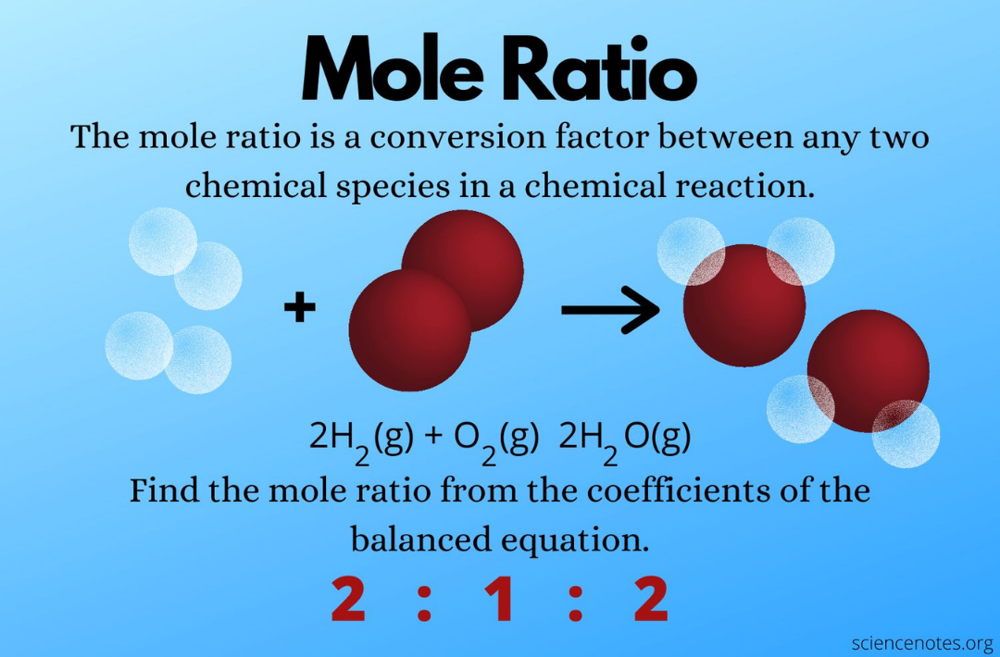
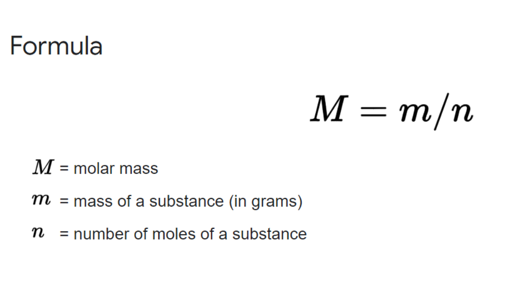

Stoichiometry is the quantitative study of reactants and products in a chemical reaction, e.g. How much hydrogen gas is produced when 1kg of sodium reacts with water? This could be calculated using a mole ratio:
The coefficients in front of 2H2 and 2H2O show that there are 2 moles, and since O2 has no coefficients it is assumed to be 1. Using the coefficients you can find out the ratio, as 2 moles of H2O reacts with 1 mole of O2 to produce 2 moles of H2O. This causes a ratio of 2 : 1 : 2 as shown in the image.
We can use this ratio to find out the mass of the products if we are given the number of reactants. For example:
How many grams of magnesium are required to convert 83.6g of TiCl4 to titanium metal?
Since Magnesium and Magnesium Chloride have coefficients of 2 and Titanium Tetrachloride and Titanium have coefficients of 1, the reaction has a ratio of 1 : 2 : 1 : 2.
In order to find the mass of Ti which is what the question is asking, we first need to find the number of moles of Titanium Tetrachloride.
The number of moles of Titanium tetrachloride = mass⁄molar mass.
Mass = 83.6g
Molar mass (combined Relative Atomic Mass of the elements) = R.A.M of Titanium (47.8) + 4 times the R.A.M of chlorine (35.5 x 4) = 189.8 g/mol.
Thus, the number of moles of Titanium tetrachloride is 0.44 moles. We then go back to the mole ratio which is 1 : 2 : 1 : 2. 1 = 0.44 so there are 0.44 moles of Titanium in the reaction.
We are looking for the mass of Titanium which is molar mass ⨯ moles.
Moles = 0.44 moles.
Molar mass = R.A.M of Titanium = 47.8 g/mol.
Thus the mass of Titanium is 21.032g.
However, the calculation of the unknown mass of a substance using the known mass of a substance is only one part of Stoichiometry. Another part is limiting and excess reagent problems.
The limiting reagent in a chemical reaction is the reactant that will be consumed completely. Once there is not more of that reactant, the reaction cannot proceed: it limits the reaction from continuing.
The excess reactant is the reactant that could keep reacting if the other had not been consumed.
Here is an example of a limiting and excess reagent problem:
2 moles of propane (C3H8) reacts with 8 moles of Oxygen gas in a combustion reaction. How many moles of Carbon Dioxide are formed? How much of the excess reagent is left over?
First we have to balance the equation, giving us:
In order to calculate the moles of Carbon Dioxide formed we need to calculate the limiting and excess reagent first. In order to do this, we need to assume the limiting reagent is C3H8 first, then we do the same for O2, and the smaller number is the limiting reagent.
We first assume C3H8 is the limiting reagent:
The question tells us that there are 2 moles of C3H8 so we first put that in the equation:
Since we want the answer to be in units of moles of CO2, we will need a unit of moles of C3H8 so we can cancel the units and have a unit of moles of CO2 on the top so we are left with units of moles of CO2:
We then need to add the ratio of the coefficients, which is 1 for C3H8 and 3 for CO2:
We then do the same thing for O2:
The equation is different as the coefficients have a ratio of 3 : 5.
Since the amount of moles is smaller than the amount of moles in the previous equation, O2 is the limiting reagent and C2H8 is the excess reagent.
Thus for part one of the question the answer is 4.8 moles of CO2.
However for part two, we are calculating the amount (in moles) of the excess reagent that did not react before the limiting reagent ran out. This can be put in an equation:
Since we know the total amount (2 moles of C3H8), we just need to calculate the amount that reacts.
In order to calculate the amount that reacts, we have to calculate the molar ratio between C3H8 and O2 instead of with CO2:
We can then put this in the equation:
Overall, I have shown you 2 examples of stoichiometry, however, there are so many more! Some include: Volume, concentration, molarity, molality, mole fraction, parts per million/billion, Avogadro’s Number, and atom economy. Stoichiometry is incredibly important and is used around the world in airbags, rockets, food factories, and Space stations.
References
[1] Student Success Center, “Determining Limiting And Excess Reagents, [Online]. Available: https://www.uah.edu/images/administrative/student-success-center/resources/handouts/handouts_2019/determining_limiting_and_excess_regents_1.pdf [Accessed March 2022].
[2] The Organic Chemistry Tutor. Stoichiometry - Limiting & Excess Reactant, Theoretical & Percent Yield - Chemistry. (20 August 2020). Accessed:March 2022. [Online Video]. Available: https://www.youtube.com/watch?v=CK2yK_JTUH4. [Accessed March 2022]
[3] Studiousguy, “7 Stoichiometry Examples in Real Life,”. [Online]. Available: https://studiousguy.com/stoichiometry-examples/ [Accessed March 2022].